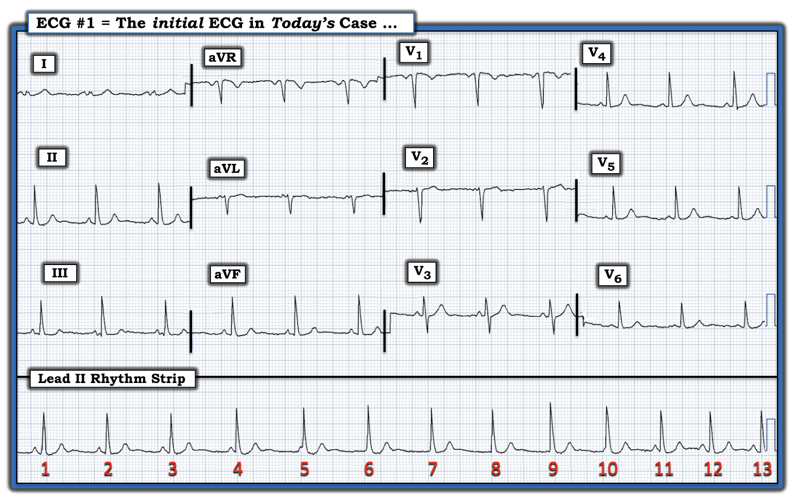
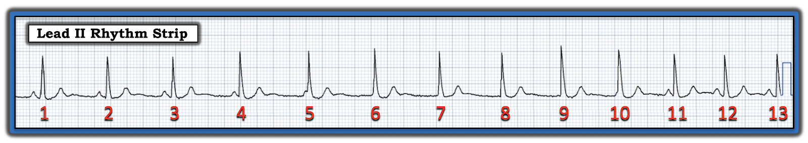
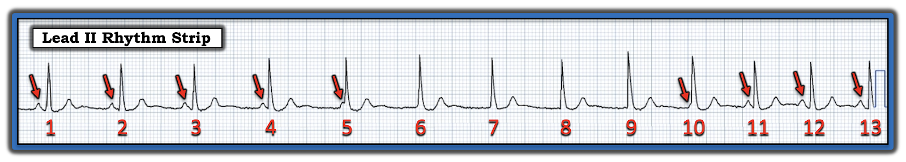
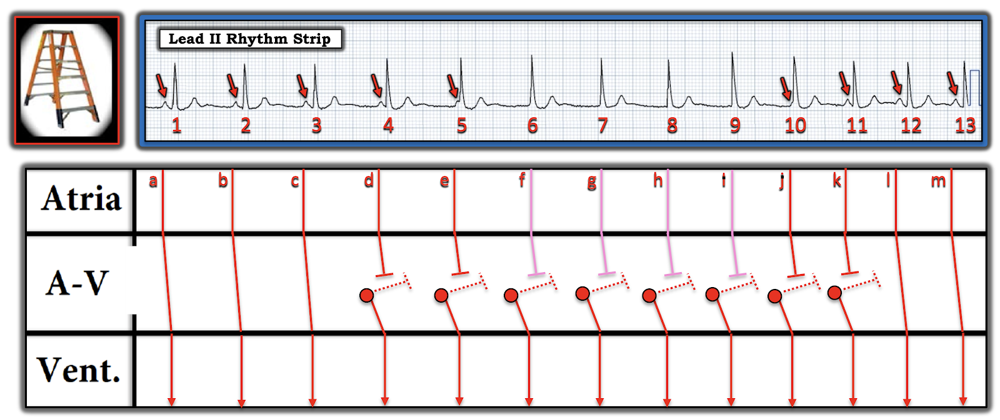

ECG Blog #357 — Blốc AV, mặc định hay chiếm quyền?
Điện tâm đồ ở Hình-1 — được ghi từ một phụ nữ trẻ tuổi trưởng thành, trước đây khỏe mạnh, đến khám vì hồi hộp đánh trống ngực.
- BẠN sẽ đọc nhịp ở Hình-1 như thế nào?
- Có bằng chứng của blốc AV không?


SUY NGHĨ CỦA TÔI về nhịp ở Hình-1:
Như thường lệ — tôi thích bắt đầu với nhịp bằng cách tập trung vào dải nhịp chuyển đạo II dài — và đánh giá Ps, Qs & 3Rs (Xem ECG Blog #185):
- LƯU Ý Kỹ thuật: Cần hiểu rằng dải nhịp chuyển đạo II dài trong bản ghi hôm nay không được ghi đồng thời với từng nhóm 3 chuyển đạo. Điều này dễ thấy nhất — nếu bạn nhìn thẳng lên phía trên các nhát #10-13 trong dải nhịp chuyển đạo II dài. Hẳn bạn sẽ thấy rõ rằng 4 nhát cuối trong bản ghi này (tức là, các nhát #10-13) nhanh hơn và không đồng bộ với việc ghi 3 nhát ở các chuyển đạo V4,V5,V6 vốn được ghi đồng thời.
- Có nhiều loại hệ thống ghi khác nhau được dùng trong số lượng nhiều không đếm xuể các hệ thống máy điện tâm đồ khác nhau. Hệ thống ghi được dùng trong bản ghi hôm nay lặp lại các nhát #1,2,3 ở mỗi nhóm 3 chuyển đạo — và — ngoài ra, cung cấp một dải nhịp chuyển đạo II dài độc lập.
- Bình luận của người viết: Đây không phải là hệ thống ghi điện tâm đồ tôi ưa thích — vì tôi thấy nó gây nhầm lẫn. Ưu điểm của hệ thống này là chúng ta có được thấy 3 nhát đầu tiên trong dải nhịp chuyển đạo dài trông như thế nào ở cả 12 chuyển đạo. Nhược điểm rõ rệt (theo ý kiến của tôi) — là chúng ta không hề biết các nhát #4-đến-13 trông như thế nào ở các chuyển đạo khác ngoài chuyển đạo II dài.
Về điện tâm đồ hôm nay: Tôi sẽ phân tích chi tiết dải nhịp chuyển đạo II dài, bắt đầu từ Hình-2 bên dưới. Tạm thời — chỉ cần nói rằng nhịp hôm nay là nhịp trên thất (tức là, mọi phức bộ QRS đều hẹp) — và nhịp hôm nay hơi không đều.
- Cần nhớ rằng bệnh nhân hôm nay là một phụ nữ trẻ tuổi trưởng thành, trước đây khỏe mạnh — tôi không thấy bất thường đáng kể nào trên điện tâm đồ 12 chuyển đạo của bệnh nhân này. Sóng P xoang dương thấy ở 3 nhát trong chuyển đạo II của Hình-1 — mọi khoảng và trục mặt phẳng trán đều bình thường — không có lớn buồng tim — và — không có thay đổi sóng ST-T cấp trên điện tâm đồ này.
Nhìn KỸ HƠN vào Nhịp Hôm nay:
Tôi đã tái hiện ở Hình-2 — dải nhịp chuyển đạo II dài trong bản ghi hôm nay. Phần còn lại của điện tâm đồ 12 chuyển đạo thấy ở Hình-1 ít giúp ích cho việc xác định nhịp — vì sau 3 nhát đầu tiên, chúng ta không thấy bất kỳ nhát nào trong 10 nhát còn lại ở các chuyển đạo khác.
- Như đã nêu — phức bộ QRS hẹp ở cả 13 nhát trong dải nhịp chuyển đạo II dài ở Hình-2.
- Nhịp không đều.
- Sóng P có hiện diện — mặc dù mối liên quan giữa sóng P và các phức bộ QRS lân cận không rõ ngay khi mới nhìn dải nhịp chuyển đạo II dài.


ĐIỂM THEN CHỐT (PEARL) #1: Bước đơn giản là đánh dấu sóng P — là cách dễ nhất mà tôi biết để giúp xác định mối liên quan (nếu có) giữa sóng P và các phức bộ QRS lân cận.
- Các mũi tên ĐỎ ở Hình-3 — đánh dấu những sóng P mà tôi chắc chắn có hiện diện.
- Tôi không chắc liệu có thêm sóng P nào đang ẩn trong phức bộ QRS của các nhát #6-đến-9 hay không.
- Tôi ngờ rằng 3 nhát đầu (tức là, các nhát #1,2,3) và 2 nhát cuối (các nhát #12,13) ở Hình-1 đều được dẫn truyền xoang — vì khoảng PR hằng định ở mỗi nhát này. Với thời gian 0.12 giây ( = 3 ô nhỏ) — khoảng PR này đủ dài để dẫn truyền xoang xảy ra, nhất là khi bệnh nhân là người trẻ tuổi (tức là, giới hạn dưới của khoảng PR trong dẫn truyền xoang bình thường thường ngắn hơn ở người trẻ).
- Ngược lại — khoảng PR trước các nhát #4, 5, 10 và 11 có vẻ quá ngắn để dẫn truyền! (tức là, thường cần ít nhất 0.12 giây để hoạt động nhĩ lan qua các đường dẫn truyền chuyên biệt trong nhĩ và qua nút AV).
Tổng Hợp Lại Toàn bộ:
Nhịp nền ở Hình-3 có vẻ là nhịp xoang — với 5/13 nhát trong dải nhịp chuyển đạo II dài được dẫn truyền xoang.
- Chúng ta biết có ít nhất phân ly nhĩ thất (AV dissociation) thoáng qua — đơn giản vì không đủ thời gian để các sóng P trước các nhát #4,5,10 và 11 dẫn truyền. Vì phức bộ QRS của mỗi nhát này hẹp và trông giống QRS của 5 nhát dẫn truyền xoang — các nhát #4,5,10,11 hẳn phải là nhát bộ nối.
- Tôi ngờ rằng sóng P xoang vẫn tiếp diễn suốt toàn bộ dải nhịp chuyển đạo II dài ở Hình-3 — nhiều khả năng bị ẩn trong phức bộ QRS của các nhát #6-đến-9. Nhưng bất kể sóng P có (hay không) ẩn trong QRS của các nhát này — chúng ta biết rằng các nhát #6-đến-9 cũng là nhát bộ nối, vì QRS của các nhát này trông giống QRS của các nhát dẫn truyền xoang, và không có sóng P nào đi trước các nhát này.
- Tần số "thoát" nút AV (bộ nối) bình thường ở người lớn là trong khoảng 40-đến-60/phút. Vì khoảng R-R ngăn cách 8 nhát bộ nối trong bản ghi hôm nay nhìn chung hơi ngắn hơn 4 ô lớn (tương ứng với tần số thoát thất ~75-80/phút) — 8 nhát bộ nối trong bản ghi hôm nay hơi gia tốc!
- Nhịp xoang trở lại ở cuối bản ghi hôm nay (tức là, với các nhát #12 và 13). Lưu ý rằng khoảng P-P ngăn cách 3 mũi tên ĐỎ cuối cùng ở Hình-3 đã ngắn lại còn ~3 ô lớn, gợi ý rằng tần số của sóng P xoang đã tăng lên ~100/phút.


Vậy Nhịp trong bản ghi hôm nay là gì?
Mặc dù chúng ta đã xác định có phân ly nhĩ thất trong một phần của nhịp ở Hình-3 — Phân ly nhĩ thất không bao giờ là một "chẩn đoán". Thay vào đó — thuật ngữ này chỉ đơn thuần mô tả một thực tế là, ít nhất tạm thời, các sóng P đều đặn không liên quan với các phức bộ QRS lân cận.
ĐIỂM THEN CHỐT (PEARL) #2: Như đã bàn chi tiết trong ECG Blog #192 — việc nhận ra Phân ly Nhĩ thất nên khiến ta xem xét 3 Nguyên nhân của thực thể này:
- Nguyên nhân #1: Blốc AV độ 2 hoặc độ 3 (trong đó một hoặc nhiều sóng P lẽ ra phải dẫn truyền thì lại không dẫn truyền).
- Nguyên nhân #2: Phân ly nhĩ thất do “chiếm quyền” (usurpation) (trong đó một nhịp bộ nối gia tốc chiếm lấy chức năng tạo nhịp).
- Nguyên nhân #3: Phân ly nhĩ thất do “mặc định” (default) (trong đó sự chậm lại = “mặc định” của ổ tạo nhịp nút SA cho phép một ổ tạo nhịp thoát bộ nối xuất hiện).
ĐIỂM THEN CHỐT (PEARL) #3: Không có bằng chứng của bất kỳ dạng blốc AV nào trong nhịp hôm nay. Đó là vì không sóng P nào trong số các sóng P không dẫn truyền — đã có cơ hội để dẫn truyền, do khoảng PR hoặc quá ngắn — hoặc sóng P bị ẩn trong phức bộ QRS.
- Điều này không có nghĩa là không thể có một mức độ nào đó của blốc AV — mà chỉ có nghĩa là nhịp ở Hình-3 quá ngắn để trả lời câu hỏi này (vì chúng ta không bao giờ thấy sóng P xuất hiện ở những thời điểm trong chu chuyển tim mà lẽ ra chúng phải dẫn truyền, nhưng lại không dẫn truyền).
ĐIỂM THEN CHỐT (PEARL) #4: Mặc dù Điểm then chốt #2 ở trên liệt kê 3 nguyên nhân cơ bản của phân ly nhĩ thất — đôi khi có thể có sự kết hợp của các nguyên nhân này. Điều này đặc biệt đúng ở bệnh nhân người lớn trẻ tuổi — là những người hay gặp một ổ thoát bộ nối hơi gia tốc hơn.
- Trong bản ghi hôm nay, có một thành phần phân ly nhĩ thất do "mặc định" — vì sóng P thứ 4 và thứ 5 (mũi tên ĐỎ thứ 4 và thứ 5 ở Hình-3) có vẻ đang chậm lại (tức là, dịch lại gần QRS của các nhát #4 và 5 hơn). Tuy nhiên, cũng có một thành phần "chiếm quyền" — vì như đã nêu ở trên, tần số của ổ thoát bộ nối trong bản ghi hôm nay có hơi gia tốc (lên ~75-80/phút).
- Dường như cũng có một thành phần phân ly nhĩ thất "đồng nhịp" (isorhythmic) đang hoạt động — vì cả tần số bộ nối và tần số xoang dường như tăng lên độc lập với nhau về cuối dải nhịp hôm nay! (tức là, thấy sóng P di chuyển vào-và-ra khỏi QRS trong suốt thời gian của nhịp ở Hình-3).
Phân ly Nhĩ thất Đồng nhịp là gì?
Như đã giới thiệu trong ECG Blog #195 — hiện tượng tần số xoang và tần số thoát bộ nối gần như bằng nhau, tiếp tục dao động nhẹ, nhưng bằng cách nào đó vẫn duy trì sóng P ở gần (dù hơi thay đổi) QRS theo thời gian được gọi là phân ly nhĩ thất đồng nhịp.
- Dạng phân ly nhĩ thất bất thường này được định nghĩa ngay bởi tên gọi của nó. Cả hai ổ tạo nhịp đều "đồng nhịp" (tức là, tần số sóng P xoang và nhịp bộ nối gần như bằng nhau) — và — có sự "phân ly" nhĩ thất (tức là, tâm nhĩ và nút AV đập độc lập với nhau). Ở dạng thuần túy — có thể không có dẫn truyền xung động xoang nào trong suốt thời gian nhịp này kéo dài. Hoặc, có thể có "bắt lại" từng lúc chức năng tạo nhịp nếu nút xoang tăng tốc trở lại.
- LƯU Ý: Thuật ngữ giàu hình ảnh “accrochage” (từ tiếng Pháp nghĩa là “bám vào” hay “móc” vào một vật gì đó) — thường được dùng để chỉ sự bám đuổi kỳ lạ của sóng P theo các phức bộ QRS lân cận, dù tần số của nhịp sóng P và nhịp QRS này hơi khác nhau. Thuật ngữ ít hình ảnh hơn, "đồng bộ hóa" (synchronization) khi đó được ưa dùng hơn khi hiện tượng phân ly nhĩ thất đồng nhịp kéo dài lâu hơn.
VỀ LÂM SÀNG — Ý nghĩa của phân ly nhĩ thất (dù là đồng nhịp hay dạng khác) phụ thuộc vào bối cảnh lâm sàng mà nó xảy ra.
- Như đã nhấn mạnh trước đó — không có bằng chứng của bất kỳ blốc AV nào trên bản ghi hôm nay. Giả sử việc không có bằng chứng blốc AV này vẫn giữ nguyên khi theo dõi thêm — diễn tiến lâm sàng của người phụ nữ trẻ tuổi trước đây khỏe mạnh trong ca hôm nay nhiều khả năng là lành tính.
- LƯU Ý: Phân ly nhĩ thất do “mặc định” không hiếm gặp ở những người khỏe mạnh, hay chơi thể thao — do nhịp chậm xoang rất thường gặp ở trạng thái nghỉ kèm theo tăng trương lực phế vị. Cho những người này vận động gắng sức ngắn thường đủ để tăng tần số xoang một cách đáng kể — điều này, khi nhịp là lành tính, sẽ khiến sóng P xoang giành lại quyền kiểm soát nhịp (và lấn át tần số thoát bộ nối lúc nghỉ).
- ĐIỀU CỐT LÕI: Tôi thấy nhịp hôm nay thú vị vì nó không thể phân loại chính xác. Thấy có phân ly nhĩ thất thoáng qua, nhiều khả năng là kết quả của sự kết hợp nhiều yếu tố, bao gồm loạn nhịp xoang, tần số thoát bộ nối hơi gia tốc — và các thành phần phân ly nhĩ thất đồng nhịp từng lúc. Dù vậy — Điều có ý nghĩa về lâm sàng là nhịp này nhiều khả năng lành tính ở người phụ nữ trẻ tuổi, ngoài ra khỏe mạnh này.
- T.B. (P.S.): Nên loại trừ các yếu tố ngoài tim có thể góp phần gây rối loạn nhịp này (tức là, xác nhận TSH và điện giải huyết thanh bình thường — và không có căng thẳng quá mức, lo âu, mất nước, hay dùng các chất kích thích như rượu, cocaine, hay thuốc cường giao cảm).
GIẢN ĐỒ BẬC THANG (LADDERGRAM) tôi đề xuất:
Để rõ ràng, ở Hình-4 — tôi đã vẽ giản đồ bậc thang đề xuất của mình để minh họa cơ chế nhiều khả năng nhất của nhịp hôm nay:
- Mặc dù tôi ngờ rằng các sóng P khá đều vẫn tiếp diễn suốt nhịp hôm nay — tôi đã vẽ các sóng P f-đến-i thấy trong Tầng Nhĩ bằng màu HỒNG, vì tôi không thể chứng minh sóng P đang ẩn trong các phức bộ QRS của các nhát #6-đến-9.
- Tôi ngờ rằng các nhát #1,2,3 và #12 và 13 đều được dẫn truyền xoang — vì khoảng PR đủ dài để dẫn truyền ở một người trẻ tuổi (tức là, thời gian ~0.12 giây) — và vì khoảng PR của mỗi nhát này đều như nhau! Dù vậy — tôi không thể chứng minh các sóng P a,b,c và l,m đang dẫn truyền (Chúng ta sẽ cần một khoảng thời gian theo dõi dài hơn để làm điều đó).
- Chúng ta biết rằng các nhát #4-đến-11 hẳn phải là nhát bộ nối hơi gia tốc — vì hình thái QRS vẫn như cũ, và không nhát nào trong số này có sóng P đi trước với "cơ hội" để dẫn truyền.


==================================
LỜI CẢM ƠN: Xin cảm ơn Arron Pearce (từ Manchester, UK) về ca bệnh và bản ghi này.
==================================
PHẦN BỔ SUNG (ngày 16 tháng 1 năm 2023):

ECG Media PEARL #12 (Âm thanh dài 6:40 phút) — ôn lại thực thể được gọi là phân ly nhĩ thất đồng nhịp.
- Dưới đây là đoạn trích 7 trang từ cuốn sách ACLS-2013 Arrhythmias (Expanded Version) của tôi — trong đó tôi xem xét sự phân biệt giữa phân ly nhĩ thất với blốc AV hoàn toàn.


==================================
Các Bài ECG Blog liên quan đến ca hôm nay:
- ECG Blog #205 — Ôn lại Cách tiếp cận Hệ thống của tôi trong đọc điện tâm đồ 12 chuyển đạo.
- ECG Blog #185 — Ôn lại Cách tiếp cận Ps, Qs, 3R để đọc nhịp một cách hệ thống.
- ECG Blog #188 — Ôn lại cách đọc và vẽ Giản đồ bậc thang (kèm các LIÊN KẾT tới hơn 50 ca giản đồ bậc thang — nhiều ca có minh họa tuần tự từng bước).
- ECG Blog #195 — Ôn lại hiện tượng được gọi là Phân ly nhĩ thất Đồng nhịp.
- ECG Blog #192 — Ôn lại 3 Nguyên nhân của Phân ly nhĩ thất (và nhấn mạnh vì sao Phân ly nhĩ thất không giống với Blốc AV hoàn toàn).